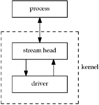
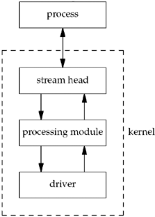
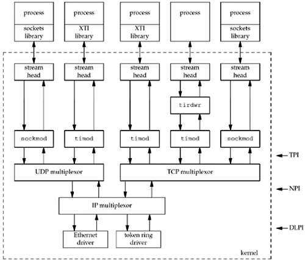
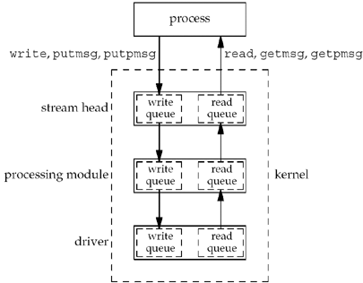
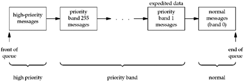
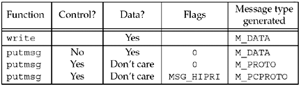

| [ Team LiB ] |
|
31.2 OverviewSTREAMS provide a full-duplex connection between a process and a driver, as shown in Figure 31.1. Although we describe the bottom box as a driver, this does not need to be associated with a hardware device; it can also be a pseudo-device driver (e.g., a software driver). Figure 31.1. A stream shown between a process and a driver. The stream head consists of the kernel routines that are invoked when the application makes a system call for a STREAMS descriptor (e.g., read, putmsg, ioctl, and the like). A process can dynamically add and remove intermediate processing modules between the stream head and the driver. A module performs some type of filtering on the messages going up and down a stream. We show this in Figure 31.2. Figure 31.2. A stream with a processing module. Any number of modules can be pushed onto a stream. When we say "push," we mean that each new module gets inserted just below the stream head. A special type of pseudo-device driver is a multiplexor, which accepts data from multiple sources. A STREAMS-based implementation of the TCP/IP protocol suite, as found on SVR4, for example, could be set up as shown in Figure 31.3. Figure 31.3. A potential implementation of TCP/IP using STREAMS.
Each component in a stream—the stream head, all processing modules, and the driver—contains at least one pair of queues: a write queue and a read queue. We show this in Figure 31.4. Figure 31.4. Each component in a stream has at least one pair of queues. Message TypesSTREAMS messages can be categorized as high priority, priority band, or normal. There are 256 different priority bands, between 0 and 255, with normal messages in band 0. The priority of a STREAMS message is used for both queueing and flow control. By convention, high-priority messages are unaffected by flow control. Figure 31.5 shows the ordering of the messages on a given queue. Figure 31.5. Ordering of STREAMS messages on a queue, based on priority. Although the STREAMS system supports 256 different priority bands, networking protocols often use band 1 for expedited data and band 0 for normal data.
Although we talk about normal-priority messages and high-priority messages, there are about a dozen normal-priority message types and around 18 high-priority message types. From an application's perspective, and the getmsg and putmsg functions we are about to describe, we are interested in only three different types of messages: M_DATA, M_PROTO, and M_PCPROTO (PC stands for "priority control" and implies a high-priority message). Figure 31.6 shows how these three different message types are generated by the write and putmsg functions. Figure 31.6. STREAMS message types generated by write and putmsg. |
| [ Team LiB ] |
|